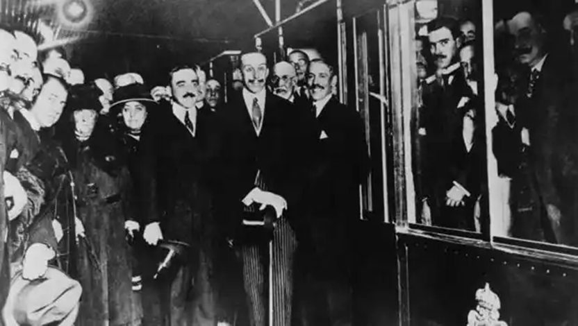
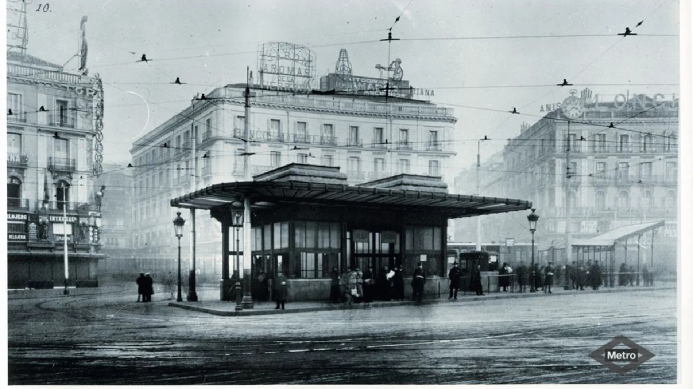
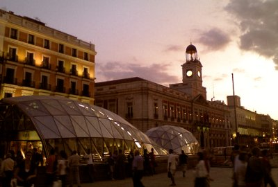

Estación de Metro de SolLa estación de Metro de Sol fue inaugurada en el día 17 de octubre de 1919, siendo una de las 8 estaciones del recorrido original Sol-Cuatro Caminos.
 El rey Alfonso XIII inaugurando la estación de Sol
Como curiosidad, en esta foto el rey salió con los ojos cerrados, pero la foto fue editada posteriormente, siendo uno de los primeros ejemplos de edición fotográfica de la historia.
En 1924 se incorporó a la línea 2 y en 1936 a la línea 3, siendo entonces la única estación perteneciente a 3 líneas.
 Entrada antigua que existió hasta la década de 1930
Durante el resto del siglo XX la estación no sufrió muchos cambios excepto por una ampliación de los andenes en los años 60.
Tras 40 años, en 2009 se amplió la cobertura de la estación, incorporándola a las líneas de Cercanías C-3, C-3a y C-4, conectando la Puerta con sitios fuera de Madrid capital.
Para ello se construyó un intercambiador, cuya entrada, conocida como "el tragabolas", adorna la Puerta del Sol desde entonces.
 El intercambiador de Sol